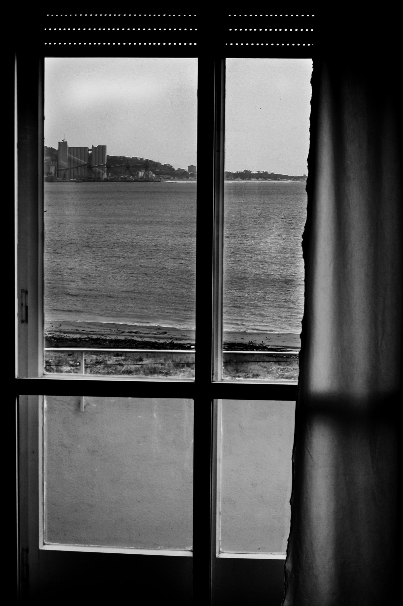
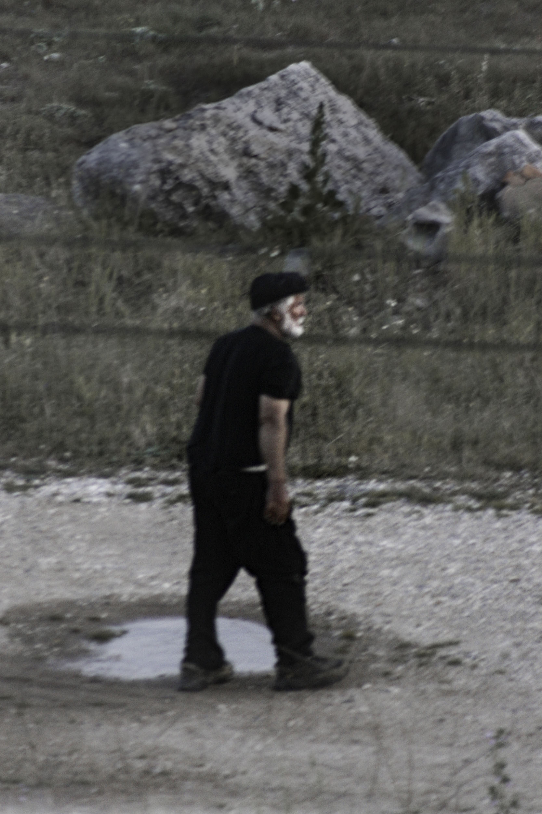
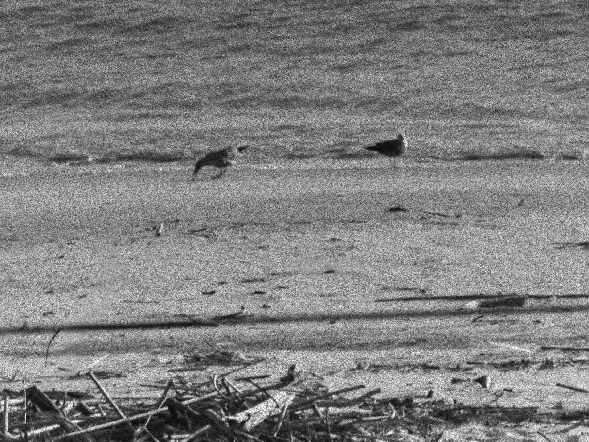
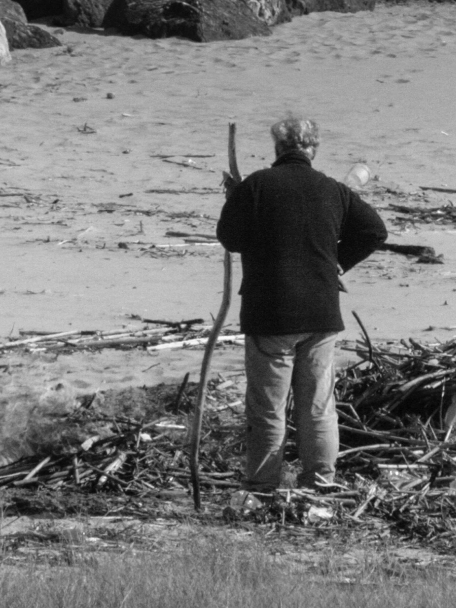
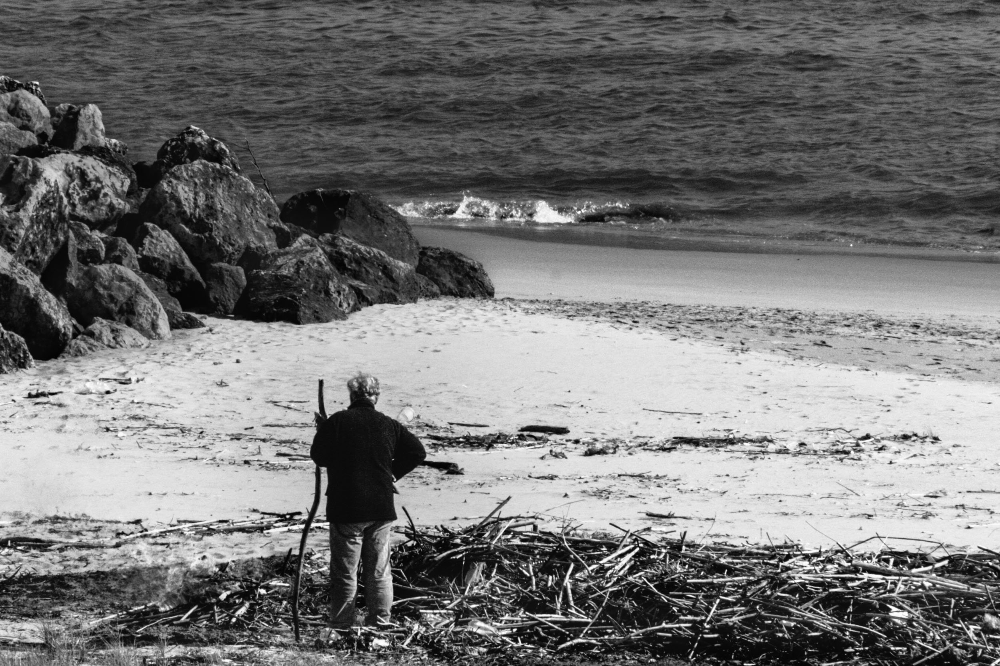
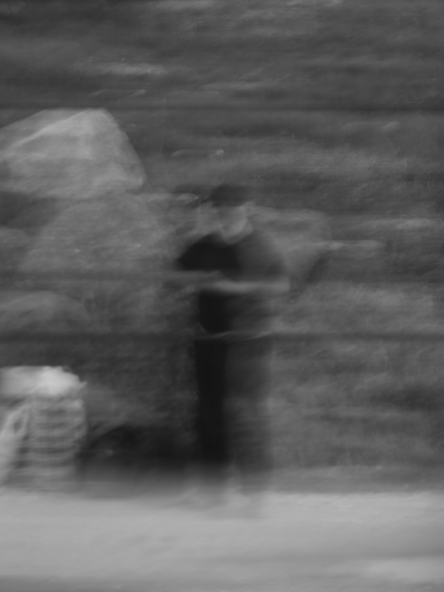

Durante alguns dias, um homem ocupou uma pequena praia nas margens do Tejo. Dormia entre as canas acumuladas pela maré, mantinha uma fogueira acesa e percorria diariamente a margem. A sua presença parecia discreta e, ao mesmo tempo, inseparável daquele lugar.
O Habitante da Praia






